Histoire et éducation à la citoyenneté
07 / 12 réalité sociales
Le renouvellement de la vision de l'homme
XVe et XVIe siècles · L'humanisme
- critique
- géocentrisme
- héliocentrisme
- humanisme
- indulgence
- philosophie
- raison
- Réforme

Mise en contexte
La Renaissance est un moment de l'histoire représentant la transition entre deux périodes historiques : le Moyen Âge et les Temps modernes. On situe la Renaissance entre 1400 et 1600. C'est durant cette période que l'Homme a renouvelé sa vision de l'humanité et qu'il a commencé à remettre en question l'importance de Dieu.
(Source : Alloprof)
L'humanisme imprègne en profondeur la culture des sociétés européennes à la Renaissance. La pensée critique se substitue progressivement à l'adhésion aux traditions transmises par l'Église. L'étude de la Renaissance permet de saisir les principales caractéristiques de l'humanisme et de cerner certains des fondements de la culture occidentale.
Concepts à l'étude
- Esprit critique : s'interroger sur la véracité d'un texte ou d'une information, autrement dit ne pas croire tout ce qu'on nous raconte ou tout ce qu'on lit.
- Géocentrisme : théorie faisant de la Terre le centre de l'Univers.
- Héliocentrisme : système d'après lequel le Soleil est considéré comme le centre de l'Univers, à l'opposé du géocentrisme.
- Humanisme : la façon de penser qui place l'être humain, sa raison et son éducation au centre des préoccupations.
- Indulgence : la rémission devant Dieu de la peine due pour les péchés, que le fidèle obtient à certaines conditions déterminées.
- Philosophie : la recherche de la sagesse et de la vérité par le raisonnement, à la manière des penseurs grecs et romains.
- Raison : la faculté qui permet à l'être humain de connaître, de juger et d'agir conformément à des principes.
- Réforme protestante : mouvement religieux qui donna naissance au protestantisme.
Situer la Renaissance dans le temps
La Renaissance est une période que les historiens situent aux 15e et 16e siècles et qui a commencé en Italie pour se propager sur tout le reste du continent européen. Comme le montre la ligne du temps, elle commence pendant le Moyen Âge, dont les historiens fixent la fin en 1492, et se poursuit durant les Temps modernes : elle chevauche les deux périodes plutôt que de se glisser entre les deux. Elle est caractérisée par un retour aux écrits, aux arts et aux sciences inspirés de l'Antiquité. Avec leurs oeuvres artistiques, techniques et philosophiques, les artistes de la Renaissance vont bousculer la vision du monde dominée à l'époque par la chrétienté.
Situer la Renaissance dans l'espace
La Renaissance naît en Italie, qui n'est pas encore un pays unifié. La péninsule est alors morcelée en cités et en États rivaux : les républiques de Venise, de Florence et de Gênes, le duché de Milan, les États de l'Église et le royaume de Naples. Cette rivalité pousse chaque cité à attirer les meilleurs artistes et savants, ce qui explique en bonne partie le foisonnement artistique de la période.
L'Europe, au 16e siècle, est composée de plusieurs royaumes. En effet, les royaumes d'Espagne, du Portugal, de France et d'Angleterre sont déjà bien définis, alors que le Saint-Empire romain germanique (ancêtre de l'Allemagne moderne) est à son apogée. Sur le territoire de l'actuelle Italie se trouvent le royaume de Naples ainsi que les États de l'Église (l'actuel Vatican). Il est important de préciser, toutefois, que les frontières des royaumes européens évolueront dans les siècles subséquents, pour atteindre leur forme actuelle au courant du 20e siècle.
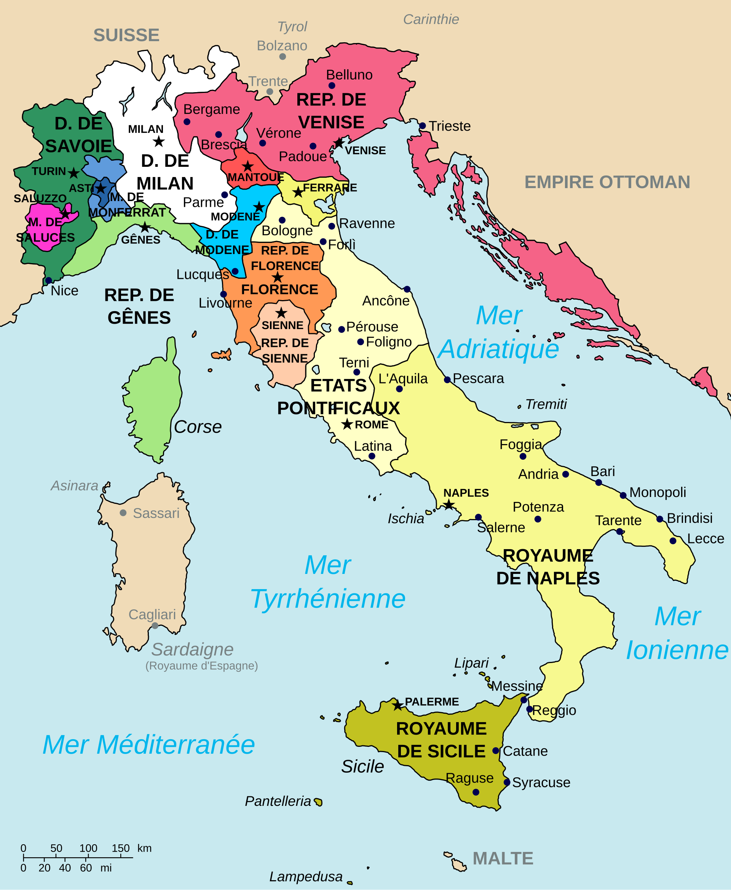
Source
Map_of_Italy_(1494)-it.svg : F l a n k e r derivative work: Fab5669 ( talk ), Map of Italy (1494)-fr, Wikimedia Commons. Licence : Creative Commons BY-SA 3.0.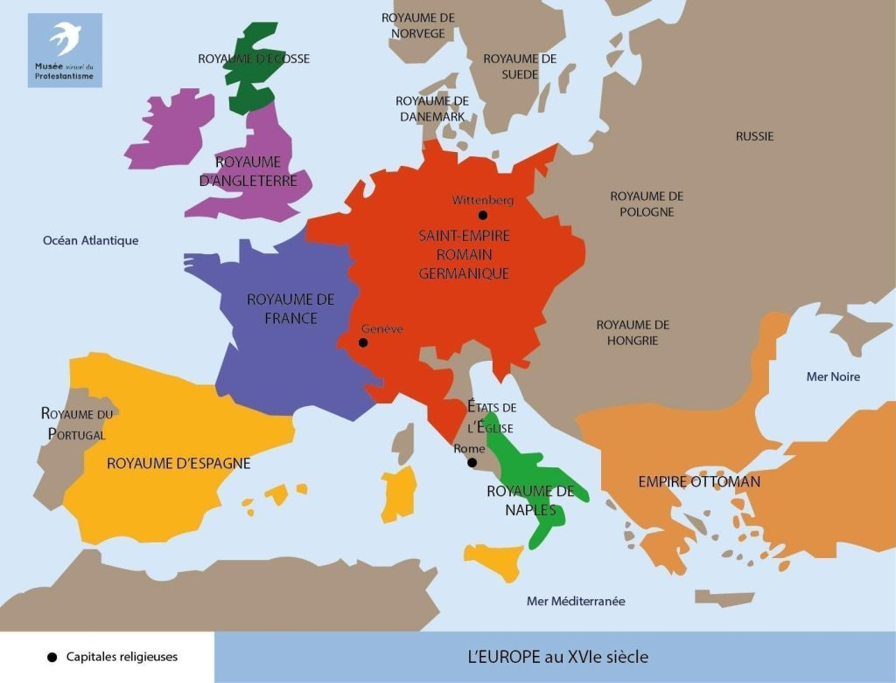
Source
Musée virtuel du protestantisme, L'Europe à la fin du 16e siècle, Musée protestant. Licence : Reproduction autorisée par le Musée protestant.La diffusion du savoir
L'invention du procédé d'impression par Gutenberg vers 1450
Source
Unidentified painter, Anonymous portrait of Johannes Gutenberg dated 1440, Gutenberg Museum, Wikimedia Commons. Licence : Domaine public.Au début du Moyen Âge, les livres étaient fabriqués un à un dans des monastères spécialisés. À partir des années 1200, les monastères abandonnèrent cette activité à des ateliers laïcs installés près des universités. Des copistes y recopient les textes à la plume d'oie sur des feuilles de parchemin ou de papier, à partir d'un original, pendant que des enlumineurs agrémentent les pages de délicates miniatures aux couleurs vives. Les ateliers vendent ainsi les manuscrits à prix d'or aux clercs et aux bourgeois assez riches pour se les payer. Mais à l'époque de Gutenberg, la copie de manuscrits n'est plus en état de satisfaire les besoins de lecture et d'apprentissage d'un nombre croissant d'étudiants et d'érudits.
Gutenberg, graveur sur bois, a l'idée aussi simple que géniale d'appliquer un procédé à des caractères mobiles en plomb. Chacun représente une lettre de l'alphabet en relief. L'assemblage ligne à ligne de différents caractères permet de composer une page d'écriture. On peut ensuite imprimer à l'identique autant d'exemplaires que l'on veut de la page, avec un faible coût marginal, puisque seule coûte la composition initiale.
Quand on a imprimé une première page en un assez grand nombre d'exemplaires, on démonte le support et l'on compose une nouvelle page avec les caractères mobiles. Ainsi obtient-on un livre à de nombreux exemplaires en à peine plus de temps qu'il n'en aurait fallu pour un unique manuscrit.
(Source : Hérodote.net)
La diffusion de l'imprimerie, de Mayence à l'Europe
Fais avancer le temps
Une invention qui fait le tour de l'Europe
Vers 1450, à Mayence, Gutenberg met au point l'imprimerie à caractères mobiles. Fais avancer le temps : chaque point est une ville où une presse s'installe. Sa couleur indique la décennie.
La carte montre 24 villes parmi les premières. Pour chacune, la date est celle du plus ancien livre daté ou du premier imprimeur connu : certaines ont peut-être imprimé un peu plus tôt. Vers 1500, des presses fonctionnent dans plus de 200 villes d'Europe.
Cinquante ans plus tard
- plus de 200
- villes d'Europe ont une presse
- environ 30 000
- éditions différentes sont connues aujourd'hui
- 400 à 500
- exemplaires par édition, en moyenne
- 8 à 20 millions
- de livres imprimés, selon les estimations des historiens
- environ 4 500
- éditions imprimées à Venise, la capitale du livre
Pourquoi si vite? Souvent, des imprimeurs allemands installent les premières presses ailleurs en Europe : à Subiaco, à Venise, à Paris, à Valence ou à Cracovie. Les livres imprimés coûtent aussi beaucoup moins cher que les manuscrits copiés à la main.
Et après? En 1517, les 95 thèses de Luther profiteront de ces presses pour circuler dans toute l'Europe.
Sources : Bibliothèque de l'Université de Princeton, Biblioteca Nacional de España, Incunabula Short Title Catalogue de la British Library et autres sources de la fiche. Fond de carte : Natural Earth.
Les moyens de diffusion des savoirs
L'imprimerie L'invention de l'imprimerie vers 1450-1453 joue un rôle majeur dans la diffusion du savoir à la fin du Moyen Âge. En effet, cette invention de Gutenberg permet la démocratisation du savoir et la multiplication des ouvrages antiques.
Les voyages Dès la Renaissance, la pensée humaniste confère au voyage et à l'expérience du monde qui s'y acquiert une place centrale dans la formation générale de l'homme. Grâce notamment à l'expérimentation et à l'observation du monde, les humanistes acquièrent certains savoirs, qu'ils peuvent ensuite partager.
Les correspondances À travers les correspondances, plusieurs humanistes réussissent à partager leur savoir à travers l'Europe. Les correspondances n'ont pas servi uniquement à partager certains savoirs, mais aussi à les enrichir et à améliorer la connaissance.
L'université La Renaissance n'a pas dépendu uniquement de l'imprimerie pour apparaître et exister. De grands humanistes de la Renaissance italienne sont morts avant l'invention de l'imprimerie. Les découvertes majeures des textes de l'Antiquité se sont faites dans les universités italiennes, puis européennes.
La Renaissance et l'humanisme
Le retour aux savoirs de l'Antiquité grecque et romaine
Source
Hans Holbein the Younger, Holbein-erasmus, Wikimedia Commons. Licence : Domaine public.La Renaissance est une période où les intellectuels « retournent » aux textes et aux valeurs de l'Antiquité. Ils relisent les textes des grands philosophes grecs et romains et ramènent au goût du jour certaines valeurs. Parmi celles-ci, il y a la liberté de pensée, la liberté de religion, la responsabilité de l'individu face à son destin et l'esprit critique.
Ces philosophes considèrent que l'Homme doit être au centre des préoccupations et que la connaissance et l'éducation devraient être accessibles à tous. Ils croient également que l'être humain peut, grâce au raisonnement et par l'expérience, arriver à comprendre le monde dans lequel il vit. Cette nouvelle façon de penser sera appelée humanisme et les philosophes qui l'élaboreront seront des humanistes. Les humanistes les plus connus sont Rabelais, Montaigne, Descartes, Thomas More, Blaise Pascal et Érasme.
Les humanistes et l'Église catholique
Les humanistes étaient des penseurs qui mettaient l'accent sur la connaissance, la raison et la philosophie. Ils cherchaient à redécouvrir les textes anciens, en particulier ceux de l'Antiquité grecque et romaine et à les étudier de manière critique. Ils mettaient également de l'avant l'idée que l'homme pouvait améliorer sa condition et réaliser son plein potentiel grâce à l'éducation et à l'usage de la raison.
Cependant, les idées humanistes entraient souvent en contradiction avec les enseignements de l'Église catholique. L'Église considérait que la vérité absolue était révélée par Dieu dans la Bible et que la foi était le principal moyen d'atteindre le salut. Pour l'Église, la raison et la connaissance humaines étaient limitées et devaient être subordonnées à la foi.
L'Église voyait donc les idées des humanistes comme une menace pour son autorité et sa doctrine. Les humanistes remettaient en question certaines pratiques de l'Église, critiquaient les abus et les excès du clergé et prônaient une plus grande liberté de pensée. Cela mettait en danger la structure hiérarchique et le contrôle que l'Église exerçait sur la société de l'époque.
Bien que certains religieux et théologiens aient été eux-mêmes influencés par les idées humanistes, l'Église a souvent réagi avec fermeté. Des censures, des procès et même des condamnations à mort ont eu lieu pour réprimer les idées considérées comme hérétiques ou subversives. En réponse à cette opposition, certains humanistes ont choisi l'exil ou ont été persécutés.
La Renaissance scientifique
La science évolue grandement lors de la Renaissance. En effet, les humanistes considèrent que la science doit être basée sur le raisonnement et sur l'esprit critique au lieu de la Bible. De plus, ils suggèrent que l'observation et l'expérimentation se doivent de faire partie intégrante de la méthode scientifique.
André Vésale, anatomiste et médecin
André Vésale, né en décembre 1514 et mort en octobre 1564, est un anatomiste et médecin flamand de la Renaissance. Vésale était le médecin de la cour royale de l'empereur Charles Quint du Saint-Empire romain germanique, puis de son fils Philippe II, roi d'Espagne. Il est essentiellement renommé pour son ouvrage De humani corporis fabrica (« à propos de la structure du corps humain », en français), publié en 1543 et réédité en 1555. Par cette oeuvre qui a révolutionné la conception scientifique du corps humain, Vésale est considéré comme l'un des fondateurs de l'anatomie et de la médecine moderne.
(Source : Wikipédia)
Des corps pour la science
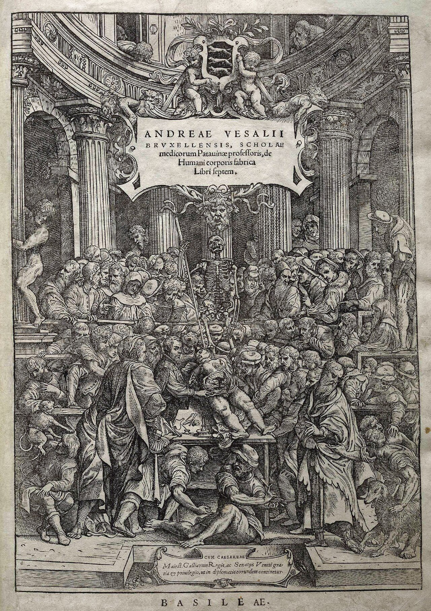
Source
Auteur inconnu, Vesalius Fabrica fronticepiece, Wikimedia Commons. Licence : Domaine public.Pour étudier l'anatomie, encore faut-il des corps. À la Renaissance, la dissection humaine n'est pas interdite, mais elle est étroitement encadrée par les autorités. Les universités doivent obtenir une autorisation pour chaque dissection publique et les corps fournis sont presque toujours ceux de criminels condamnés à mort, remis aux facultés de médecine après leur exécution. À Padoue, où enseigne Vésale, un juge nommé Marcantonio Contarini appuie ses travaux en lui réservant les cadavres des condamnés. Il lui arrive même de retarder une exécution pour qu'elle coïncide avec une leçon d'anatomie.
Les corps disponibles demeurent toutefois rares. Certains étudiants et anatomistes en viennent à exhumer clandestinement des cadavres dans les cimetières, une pratique illégale et sévèrement punie. Vésale lui-même raconte avoir subtilisé, dans sa jeunesse, les ossements d'un condamné laissés sur un gibet près de Louvain. Le frontispice de son grand ouvrage illustre bien cette réalité : on y voit Vésale au centre d'un théâtre anatomique, en train de disséquer un corps devant une foule d'étudiants et de curieux.
Le modèle astronomique
En astronomie, Nicolas Copernic (1473-1543) révolutionne le modèle astronomique tel qu'il était connu au Moyen Âge. En effet, la théorie du géocentrisme était enseignée et globalement acceptée. L'Église enseignait ainsi que la Terre est au centre de l'Univers et que les astres tournent autour d'elle. Copernic, pour sa part, propose un nouveau modèle astronomique grâce à ses observations. Il propose la théorie de l'héliocentrisme, faisant du Soleil le centre de l'Univers. Cette théorie a, plus tard, été validée par Galilée à l'aide de sa lunette astronomique.
Giordano Bruno, un penseur condamné
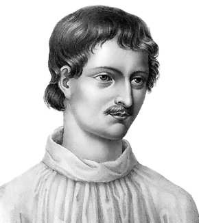
Source
Auteur inconnu, Giordano Bruno, Wikimedia Commons. Licence : Domaine public.Giordano Bruno (1548-1600) est un philosophe italien, d'abord moine dominicain. Inspiré par les travaux de Copernic, il va encore plus loin : il propose que l'Univers est infini, que les étoiles sont des soleils semblables au nôtre et qu'il pourrait exister d'autres mondes. Ses idées religieuses, jugées hérétiques par l'Église, et ses conceptions de l'Univers lui valent d'être arrêté puis jugé par le tribunal de l'Inquisition. Au terme d'un procès de près de huit ans, il refuse de renier ses idées et est condamné au bûcher. Il est brûlé vif à Rome, sur la place du Campo de' Fiori, le 17 février 1600. Son histoire montre les risques que couraient les penseurs qui remettaient en question la vision du monde défendue par l'Église.
La Renaissance artistique
L'art va considérablement évoluer durant la Renaissance. De nouvelles techniques sont développées par les artistes, ce qui permettra à cette période de se démarquer sur le plan artistique.
Le réalisme et la perspective
Les oeuvres créées par les artistes de la Renaissance peuvent être qualifiées, pour la plupart, de réalistes. En effet, les peintres ont le souci d'exposer leur sujet de façon la plus réaliste possible. Ils tentent de respecter les proportions, la symétrie et l'harmonie des formes, comparativement aux oeuvres du Moyen Âge qui, bien souvent, n'ont pas ce même respect.
La perspective, cette nouvelle méthode découverte par les artistes de l'époque, permet de représenter la vue d'objets à trois dimensions sur une surface plane. En d'autres mots, grâce à la technique de la perspective, les peintres peuvent illustrer la profondeur et la distance sur leur toile en utilisant un point de fuite qui oriente l'oeil de l'observateur.
Trois chefs-d'oeuvre de la Renaissance
La Pietà (1499) de Michel-Ange. La Pietà représente le thème religieux de la « Vierge douloureuse » tenant sur ses genoux le corps de Jésus descendu de la croix, avant d'être déposé dans son tombeau. Il s'agit d'un mélange entre la beauté païenne et la fidélité religieuse.
La naissance de Vénus (1484-1485) de Sandro Botticelli. Cette célèbre peinture de Sandro Botticelli (1444-1510) illustre la naissance de Vénus, déesse romaine de l'amour et de la beauté. Le teint blanchâtre de la déesse, les proportions harmonieuses de son corps et sa posture rappellent les statues de l'Antiquité gréco-romaine, que les artistes de la Renaissance prennent pour modèle. Au moment où Botticelli peint sa Vénus, cela ne fait que cinquante années que les artistes européens représentent des corps humains nus.
La Joconde (1503-1506) de Léonard de Vinci. La technique de composition de la Joconde en fait une des oeuvres les plus étudiées dans l'histoire de l'art et par les apprentis artistes. Elle est appréciée pour son cadrage très moderne, comme un portrait qu'on pourrait réaliser de nos jours. Plus subtilement, des effets d'optique sont créés par l'emplacement des yeux de la jeune femme et son sourire discret. Certains disent qu'on a l'impression d'être constamment observé par la Joconde, quelle que soit la position depuis laquelle on la regarde. Cette anecdote démontre les connaissances scientifiques et anatomiques de Léonard de Vinci. Quant au célèbre sourire de Mona Lisa, des témoignages narrent qu'un groupe de musiciens jouait pendant les heures de travail du peintre afin qu'elle garde cette attitude joyeuse. L'arrière-plan est également un cas d'école : la technique du sfumato est utilisée pour créer une perspective qui se fond de manière douce. (Source : Paris City Vision)
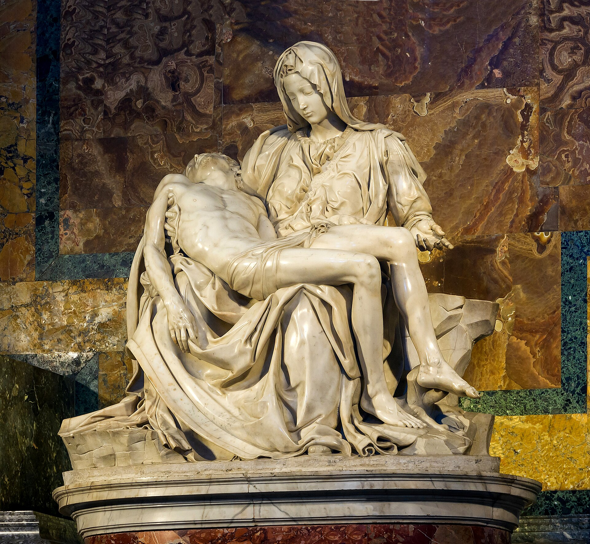
Source
Jebulon, Michelangelo's Pietà Saint Peter's Basilica Vatican City, Wikimedia Commons. Licence : Creative Commons Zero.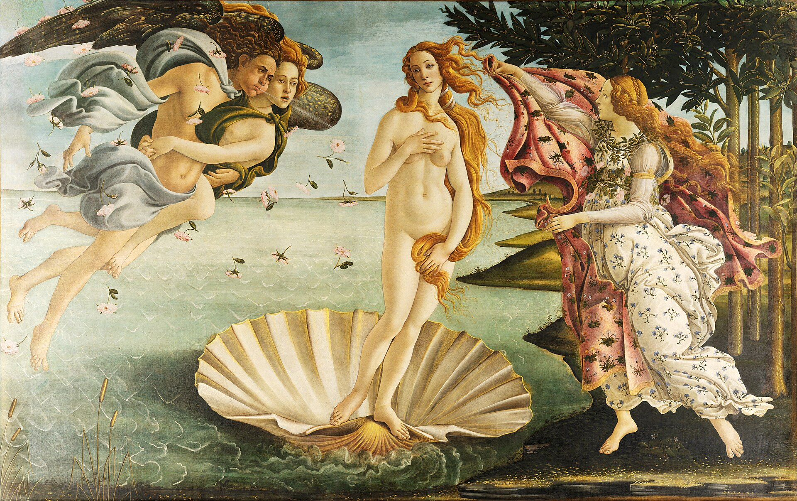
Source
Sandro Botticelli, Sandro Botticelli - La nascita di Venere - Google Art Project - edited, Wikimedia Commons. Licence : Domaine public.
Source
Leonardo da Vinci, Mona Lisa, by Leonardo da Vinci, from C2RMF retouched, Wikimedia Commons. Licence : Domaine public.L'École d'Athènes de Raphaël (1509-1511)
Source
Raphael, "The School of Athens" by Raffaello Sanzio da Urbino, Wikimedia Commons. Licence : Domaine public.L'oeuvre représente une assemblée idéale des plus grands esprits de l'Antiquité. C'est une manifestation de l'humanisme, qui place la raison humaine et les textes antiques au centre de l'apprentissage. Apollon est représenté à gauche, Athéna à droite. Au centre, Platon pointe son doigt vers le ciel : la vérité se trouve dans le monde des idées, au-delà du monde physique. Aristote, à sa gauche, tend la paume vers le sol, ce qui symbolise l'empirisme, c'est-à-dire que la vérité s'observe par l'expérience et par la science.
Du côté de Platon se trouvent ceux qui s'intéressent à l'invisible et aux mathématiques pures :
- Socrate, qu'on voit compter sur ses doigts en argumentant avec un groupe de jeunes;
- Pythagore, assis au premier plan, qui écrit dans un livre entouré de disciples;
- Héraclite, isolé, accoudé sur un bloc de marbre au premier plan.
Du côté d'Aristote se trouvent les penseurs liés à la terre et à l'observation :
- Euclide, ou peut-être Archimède, penché au sol, qui trace une figure géométrique avec un compas;
- Zoroastre et Ptolémée, qui tiennent respectivement un globe céleste et un globe terrestre, symbolisant l'astronomie et la géographie;
- Raphaël lui-même, qui s'est peint parmi les savants, s'élevant ainsi au rang d'intellectuel.
Le mécénat
Lors de la Renaissance, il n'est pas rare que les artistes tels que Michel-Ange, Léonard de Vinci ou Sandro Botticelli soient pris sous la tutelle d'un mécène. Ce dernier soutient financièrement les artistes afin qu'ils puissent créer librement leurs oeuvres. Ce soutien peut prendre la forme d'un hébergement ou d'une pension mensuelle.
Deux grands mécènes
La famille Médicis, à Florence. Les Médicis de Florence sont parmi les familles qui ont le plus subventionné les arts en Italie. Cosme de Médicis, banquier florentin, a commandé de nombreuses oeuvres d'art, notamment le David de Donatello. Son petit-fils, Laurent de Médicis, surnommé Laurent le Magnifique, est devenu le mécène de plusieurs artistes de la Renaissance, dont Le Verrocchio, Léonard de Vinci, Sandro Botticelli et Michel-Ange. Dirigeant de la cité de Florence, où il régnait sans partage, il était poète lui-même et réunissait autour de lui savants et artistes, ce qui a fait de Florence le grand foyer de la Renaissance italienne.
François 1er, en France. François 1er contribue à la diffusion de la Renaissance italienne en France : de nombreux artistes italiens sont au service du souverain, dont Benvenuto Cellini et Léonard de Vinci, qui demeure au Clos Lucé près d'Amboise de 1516 à 1519. C'est sous son règne que la collection royale d'oeuvres d'art, dont la Joconde au prix de 4000 écus d'or, se constitue réellement. Les peintres Rosso Fiorentino et Le Primatice ont travaillé au château de Fontainebleau, que le roi fait agrandir et décorer : le château devient le premier grand chantier de la Renaissance française et donne son nom à l'école de Fontainebleau.
Source
Giorgio Vasari, Vasari-Lorenzo, Wikimedia Commons. Licence : Domaine public.Source
Auteur inconnu, Jean Clouet 001, Wikimedia Commons. Licence : Domaine public.Source
Auteur inconnu, Chateau Fontainebleau, Wikimedia Commons. Licence : Creative Commons BY-SA 3.0.L'architecture à la Renaissance
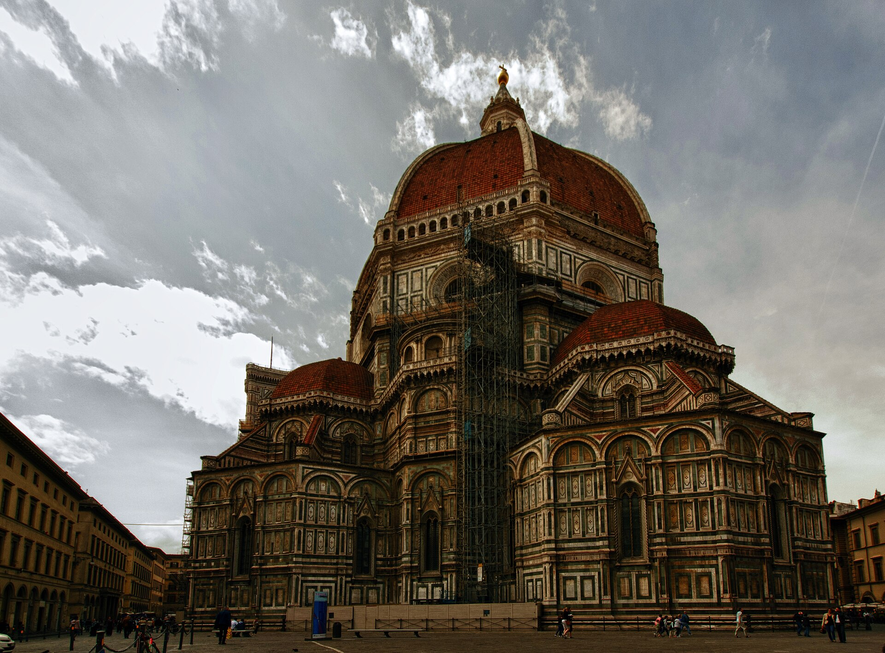
Source
Kevin Poh, Florence Cathedral (Duomo), Wikimedia Commons. Licence : Creative Commons BY 2.0.L'architecture, comme la science et l'art, évolue grandement lors de la Renaissance. Le style gothique moyenâgeux est délaissé alors que l'architecture antique revient à la mode. Les éléments architecturaux antiques tels que le dôme, le fronton et les colonnes dominent, et la symétrie des bâtiments devient la norme.
La Réforme protestante
Source
Lucas Cranach the Elder, Lucas Cranach d.Ä. - Martin Luther, 1528 (Veste Coburg), Wikimedia Commons. Licence : Domaine public.L'Église catholique règne en maître sur l'Europe depuis le milieu du Moyen Âge, car elle avait fait des alliances avec les rois afin d'augmenter leur pouvoir mutuel sur la population. Après près de mille ans d'existence, l'Église catholique était, aux yeux de quelques penseurs, due pour une mise à jour, un renouvellement, afin de concorder avec les nouvelles valeurs qui apparaissaient. On lui reprochait d'avoir des évêques qui se préoccupaient plus d'accumuler des richesses et d'avoir des moeurs plus que douteuses. On lui reprochait aussi la vente d'indulgences (billet que les gens achetaient afin de se faire pardonner leurs péchés et d'aller plus rapidement au Paradis), dont l'Église empochait l'argent pour construire encore plus richement la Cité du Vatican.
Les principales critiques envers le clergé
- Les membres du clergé préfèrent accumuler des richesses au lieu de remplir leur rôle auprès des fidèles;
- certains membres du clergé ne respectent pas leurs voeux de chasteté et de célibat;
- on dit des prêtres qu'ils sont peu instruits;
- la simonie, cette pratique qui consiste à demander de l'argent en retour des sacrements (mariage, baptême, funérailles, etc.);
- la vente d'indulgences.
L'apparition du protestantisme
L'Église catholique, refusant de changer, engendra la Réforme protestante. Cette réforme amènera la création de plusieurs nouvelles Églises qui pratiqueront les rituels chrétiens de façons différentes. Martin Luther, en Allemagne, fondera l'Église luthérienne à la suite de la publication de ses 95 thèses sur la vertu des indulgences en 1517. Dans celles-ci, il dénonce avec force le trafic des indulgences pratiqué depuis 1506 par le pape Jules II, puis par Léon X, qui finance la construction de la basilique Saint-Pierre de Rome. Ce dernier octroie une indulgence qui mène le généreux donateur, dont les péchés sont absous, directement au paradis. Jean Calvin, quant à lui, fondera l'Église calviniste. Ces deux nouvelles Églises auront en commun des rituels plus austères, mais aussi un accès à la lecture de la Bible, qui sera traduite dans la langue des fidèles et non en latin comme celle des catholiques.
En Angleterre, c'est le roi Henri VIII qui fonda l'Église anglicane, en réaction au refus du pape de lui accorder le divorce. Cette Église ressemblera grandement à l'Église catholique, au détail près que le roi devient aussi le chef de l'Église à la place du pape.
Le calvinisme et l'anglicanisme
L'Église calviniste. Jean Calvin (1509-1564) est un réformateur français réfugié à Genève, ville qui devient sous son influence un grand centre du protestantisme. Pour Calvin, la Bible est la seule autorité en matière de foi. Le culte calviniste est austère : les temples sont dépouillés, sans statues ni images saintes, et des pasteurs remplacent les prêtres. Calvin enseigne aussi la prédestination, c'est-à-dire l'idée que Dieu a choisi d'avance les personnes qui seront sauvées. Le calvinisme se répand en France, où ses fidèles sont appelés huguenots, ainsi qu'aux Pays-Bas, en Écosse et dans plusieurs régions du Saint-Empire.
L'Église anglicane. En Angleterre, le roi Henri VIII (1491-1547) souhaite faire annuler son mariage avec Catherine d'Aragon, ce que le pape refuse. En 1534, l'Acte de suprématie proclame le roi chef suprême de l'Église d'Angleterre : c'est la naissance de l'Église anglicane. Celle-ci conserve une bonne partie des rites et de l'organisation de l'Église catholique, dont les évêques et les cérémonies, mais elle rejette l'autorité du pape et les monastères du royaume sont fermés. L'anglicanisme se situe ainsi à mi-chemin entre le catholicisme et le protestantisme.
Source
Anonymous ( France ) Unknown author, John Calvin Museum Catharijneconvent RMCC s84 cropped, Wikimedia Commons. Licence : Domaine public.Source
Workshop of Hans Holbein the Younger, After Hans Holbein the Younger - Portrait of Henry VIII - Google Art Project, Wikimedia Commons. Licence : Domaine public.Les guerres de religion
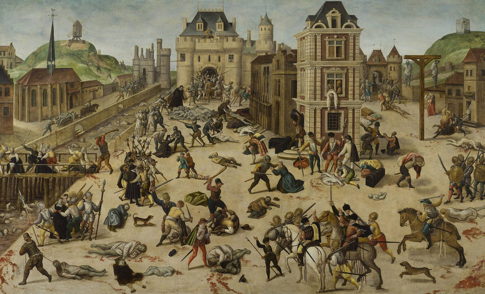
Source
François Dubois 1529-1584, La masacre de San Bartolomé, por François Dubois, Wikimedia Commons. Licence : Domaine public.Au début du 16e siècle, Martin Luther conteste l'Église catholique et met en place la Réforme protestante. Très vite, le mouvement réformiste va se diffuser dans toute l'Europe, grâce à l'invention de l'imprimerie.
En France, le mouvement prend de plus en plus d'ampleur. Plusieurs familles issues de la noblesse y adoptent le protestantisme. Elles ne tardent pas à faire l'objet de persécutions de la part des catholiques. Dans la nuit du 23 au 24 août 1572, à Paris, des milliers de protestants huguenots furent massacrés par des catholiques, sous l'impulsion de la famille royale catholique et de Catherine de Médicis. Cet épisode sanglant, qui s'étendit ensuite à d'autres villes du royaume, marqua un tournant dans les conflits entre catholiques et protestants en France, exacerbant les tensions religieuses et politiques du 16e siècle.
Divisée, la France sombre dans une série de guerres civiles. Nés dans une atmosphère propice, les conflits armés dureront plus de 30 ans et ne s'achèveront qu'avec l'édit de Nantes.
La Contre-Réforme
Le concile de Trente
Face à la création de ces nouvelles Églises dites protestantes, l'Église catholique a convoqué le concile de Trente, qui est une assemblée d'évêques. Le concile débute en 1545 et se poursuit, avec de longues interruptions, jusqu'en 1563. Les évêques y réaffirment les croyances catholiques contestées par les protestants et y imposent une discipline plus stricte au clergé : les évêques doivent résider dans leur diocèse, des séminaires sont créés pour mieux former les prêtres et la vente des indulgences est encadrée. C'est l'ensemble de cette riposte qu'on appelle la Contre-Réforme catholique.
Le tribunal de l'Inquisition et l'Index
Le concile de Trente débute trois ans après le rétablissement du tribunal de l'Inquisition, chargé de juger les hérétiques, c'est-à-dire les personnes qui ne se conforment pas aux croyances et aux pratiques catholiques. Les accusés y sont interrogés, parfois torturés, et les peines vont de la pénitence publique à la condamnation au bûcher.
L'Église a de plus créé l'Index, une liste de tous les ouvrages que les « bons catholiques » ne pourront lire sous peine de brûler en Enfer ou de se retrouver devant le tribunal de l'Inquisition. Plusieurs oeuvres d'humanistes et de savants s'y retrouvent, dont celles de Galilée.
Les Jésuites et les missions en Amérique
L'Église a également créé de nouveaux ordres religieux afin de convertir les peuples nouvellement rencontrés en Amérique et, ainsi, augmenter le nombre de fidèles. Le plus connu est la Compagnie de Jésus, les Jésuites, fondée en 1540 par Ignace de Loyola.
Cette décision te touche de près : ce sont ces mêmes Jésuites qui s'établissent en Nouvelle-France à partir de 1625 pour évangéliser les Premières Nations, notamment les Hurons-Wendats. Ils apprennent leurs langues, rédigent des dictionnaires et envoient en France les Relations des Jésuites, ces récits annuels qui comptent aujourd'hui parmi nos plus importantes sources écrites sur le Québec du 17e siècle. Leur venue aura toutefois des conséquences lourdes pour les nations autochtones, dont la transmission de maladies européennes et le bouleversement de leurs croyances. La photo ci-contre montre la chapelle de Sainte-Marie-au-pays-des-Hurons, la mission fondée en 1639 en Huronie et reconstituée aujourd'hui : c'est là que jésuites et Hurons-Wendats se côtoyaient au quotidien.
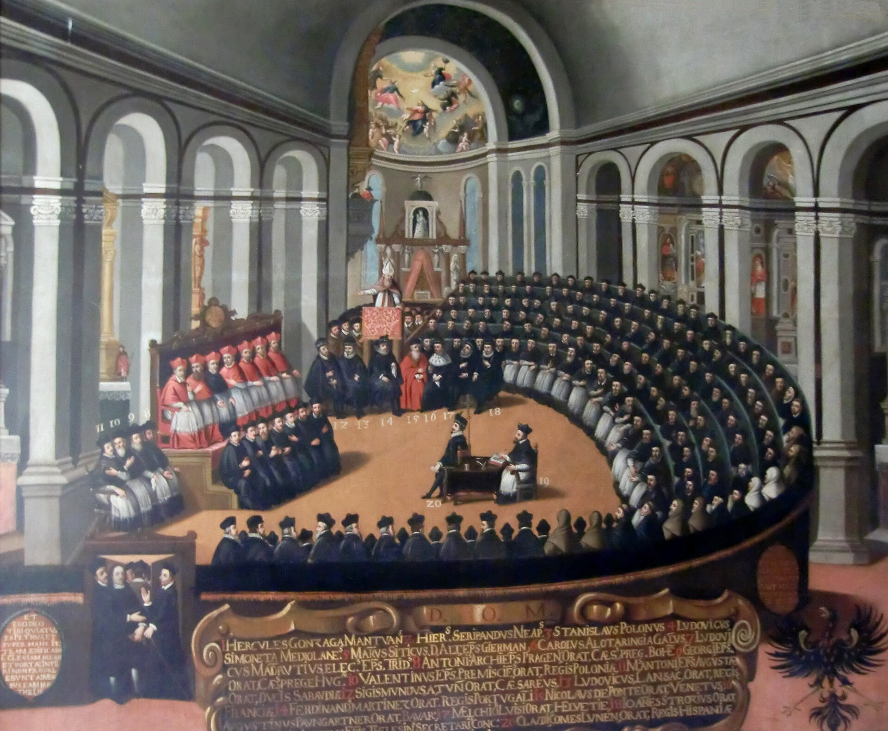
Source
Laurom, Concilio Trento Museo Buonconsiglio, Wikimedia Commons. Licence : Creative Commons BY-SA 3.0.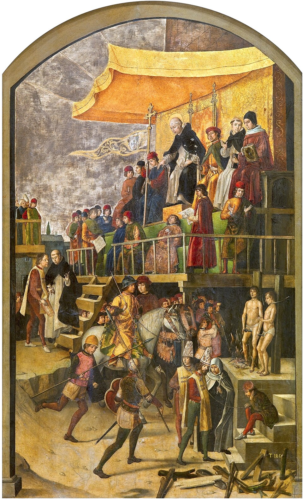
Source
Pedro Berruguete, Pedro Berruguete Saint Dominic Presiding over an Auto-da-fe 1495, Wikimedia Commons. Licence : Domaine public.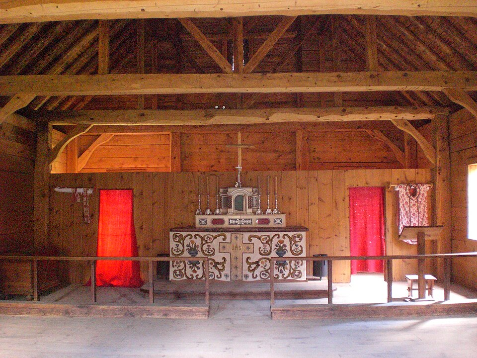
Source
Pjposullivan, Sainte-Marie among the Hurons Jesuit chapel, Wikimedia Commons. Licence : Creative Commons BY-SA 4.0.Un projet Scratch avec le RÉCIT
Sources
- Service national du RÉCIT en univers social
- Alloprof, Renaissance : le renouvellement de la vision de l'homme
- Hérodote.net, Gutenberg et l'imprimerie
- Wikipédia
- Le livre scolaire
- Paris City Vision, La Joconde
- Bibliothèque de l'Université de Princeton, Gutenberg and After : Europe's First Printers, 1450-1470
- Incunabula Short Title Catalogue (ISTC), British Library et CERL
- History of Information, By 1500 Printing Presses are Established in 282 Cities
- École normale supérieure, département d'histoire, l'imprimerie et le livre à la Renaissance
- Wikipédia (en anglais), Global spread of the printing press
- Wikipédia (en anglais), Incunable
- Wikipédia (en anglais), Ulrich Zell
- Gran Enciclopèdia Catalana, Impremta
- Universidad Pablo de Olavide, El libro y la Reforma en Sevilla
- Natural Earth, fonds de carte